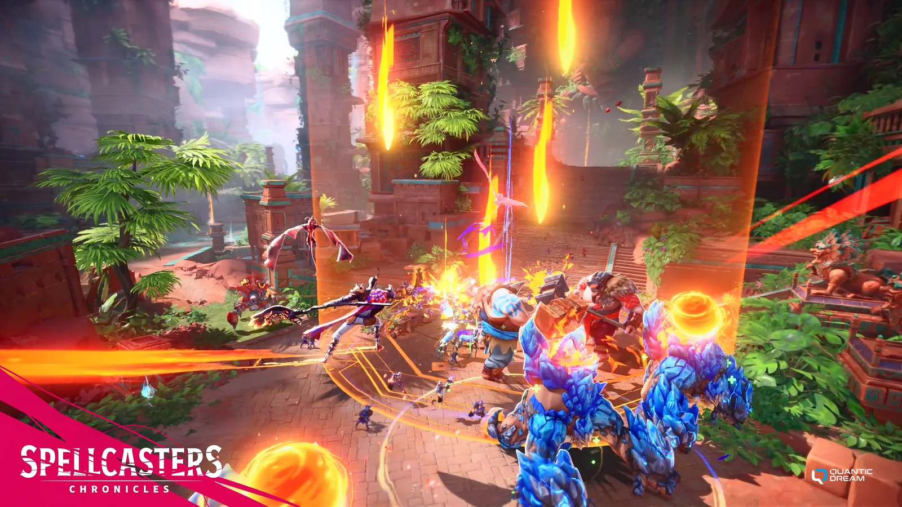
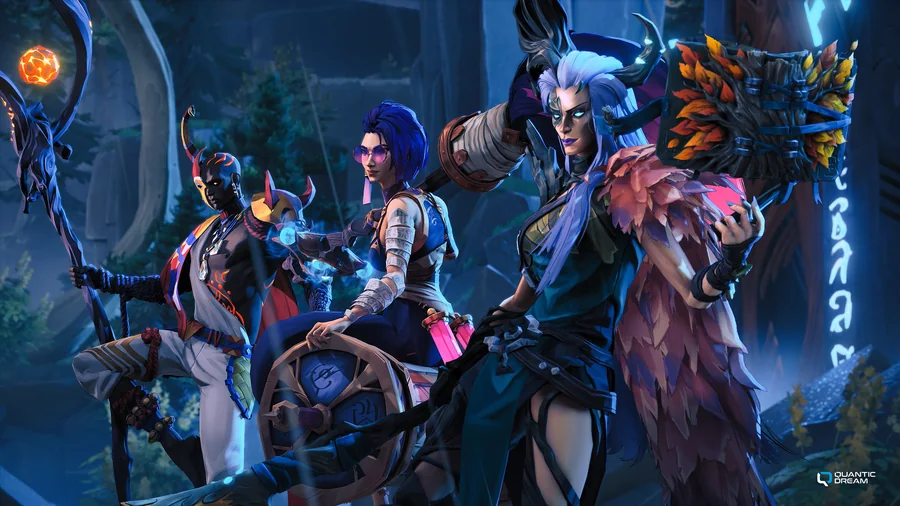
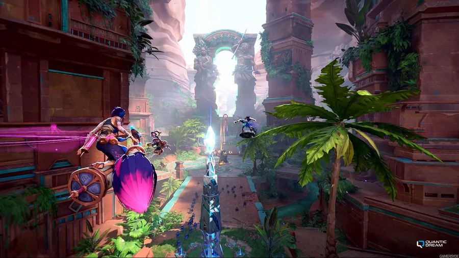
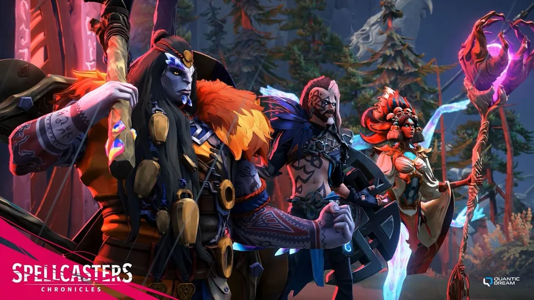
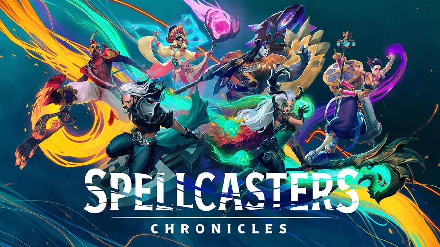

Spellcaster Chronicles
Quantic Dream · Oct 2025 – May 2026 · a MOBA on a proprietary engine
Spellcaster Chronicles is a MOBA built on Quantic Dream's proprietary engine. I worked on its macro loop, the systems that give players a reason to return, within a deterministic ECS network architecture.
What I did
I implemented the inbox, daily-quest, reward and notification systems that carry the game's macro loop, and optimised player customisation with asynchronous loading and caching. I added feature switches across the network and UI systems, and improved the tooling that exports game data to the backend. I worked closely with the backend and UI teams to deliver these features.





Technical proof
Gameplay
Quests, challenges, rewards, notifications and the inbox that delivers them.
Game networking
ECS-based online gameplay running over deterministic network simulation, with feature switches spanning network and UI systems.
Performance
Player customisation optimised with asynchronous loading and caching.
Developer tools
Improved the tools that export game data to the backend systems.
C++ · Lua · Blueprint · Perforce
Interested in similar work? Contact